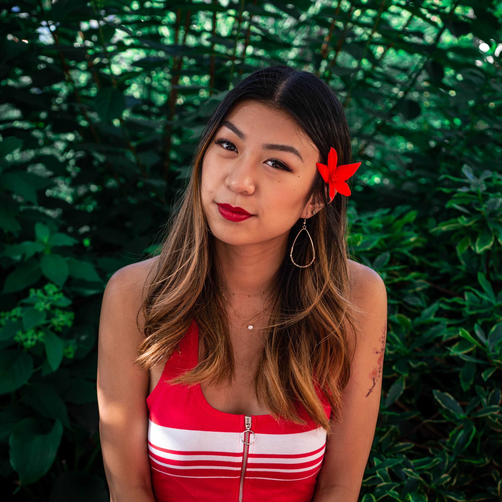
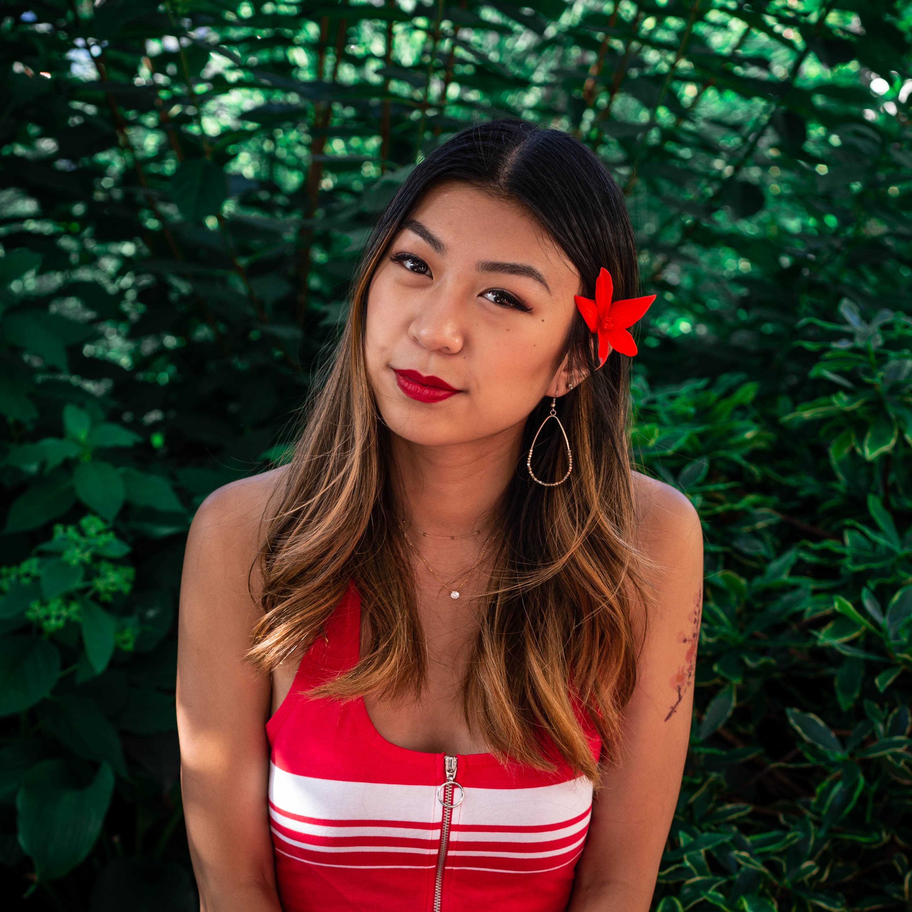
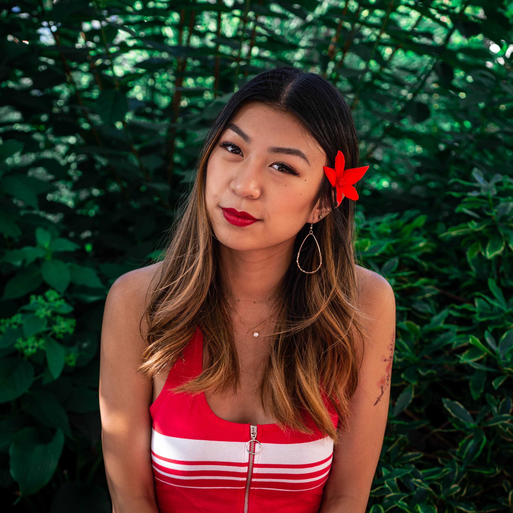

Tidbits is a 4-student team for a Hackathon for the University of Washington. We are passionate about creating for social good and inclusive design. We wanted to make a platform that would be equally accessible to those with mobility disorders as everyone else, especially because in our research we found that mobility disorders often lead to anxiety and social alienation. Journaling and mood tracking can help with these things, as well as reducing stress and creating awareness for negative influences.
To learn more about our team, keep reading!
